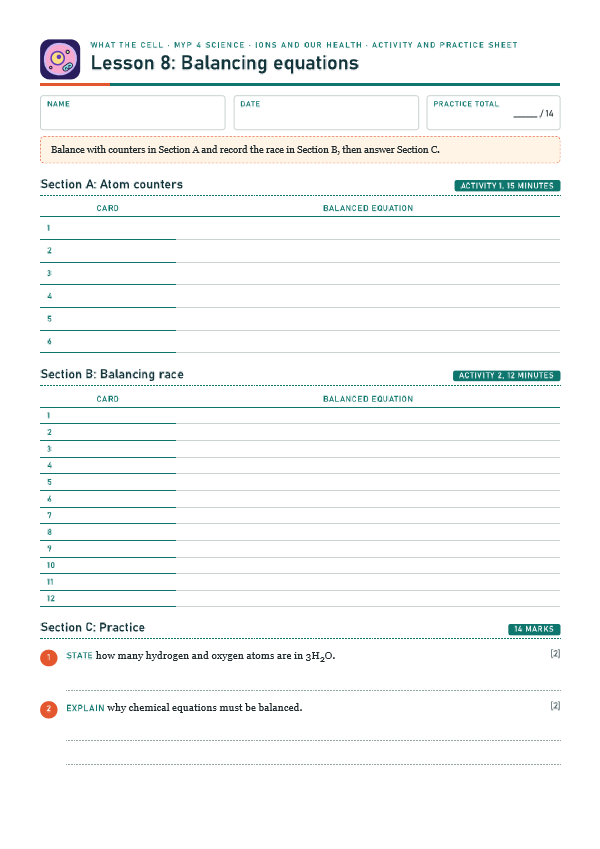

By the end of the lesson you can
- Count atoms in formulae and equations
- Explain why equations must balance
- Balance equations using coefficients
- Check a balanced equation
Keys: arrows or a presentation clicker move the slides, F for full screen. Slides with a red dot have a video or simulation.
Videos (all 5 minutes or less)
- 3:03
How to balance equations, part 1
FuseSchool. While you watch: What can you change to balance an equation? Slide 10.
Simulations
- Lab
- PhET
Print and practise

Activity and practice sheet
Used in the lesson’s activities, with practice questions. Your teacher has the answers.
Download (PDF)Lesson 8 slides
All 16 slides in one file, to read again or print. The video buttons on the slides open YouTube.
Download the slides (PDF)Revising? The Revision tab on the unit page has the unit notes and review.
Class activity pack
Everything to print for the lesson’s activities: picture cards, sorting mats, station cards with their kit lists, and the teacher’s set-up notes. Print it before class.
Download the activity pack (PDF)Notes: Balancing equations
coefficient
The big number in front of a formula: how many of that particle. For example: the 2 in 2H2O.
subscript
The small number inside a formula; never change it. For example: the 2 in H2O.
balanced equation
The same number of each atom on both sides. For example: 2H2 + O2 -> 2H2O.
molecule
Two or more atoms bonded together. For example: O2, H2O.
diatomic
An element whose molecules have two atoms. For example: H2, O2, N2, Cl2.
count
Multiply coefficient by subscript. For example: 2H2O has 4 H.
Key words
| coefficient | number in front of a formula |
|---|---|
| subscript | number inside a formula |
| balanced equation | same atoms on both sides |
| diatomic | two atoms per molecule |
| conservation of mass | atoms are not made or lost |